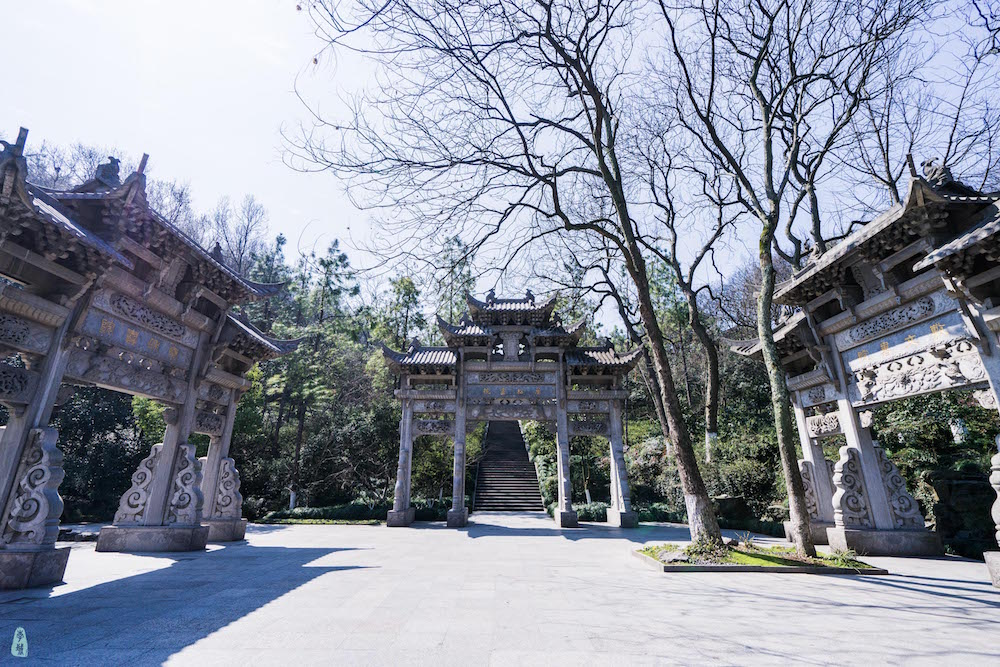
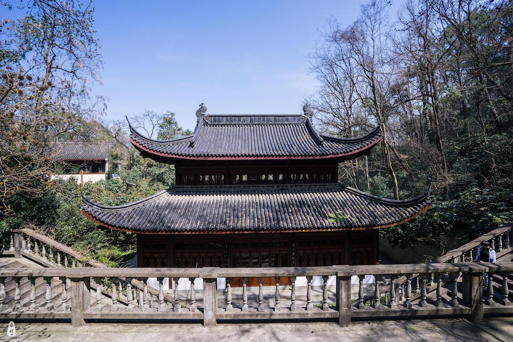
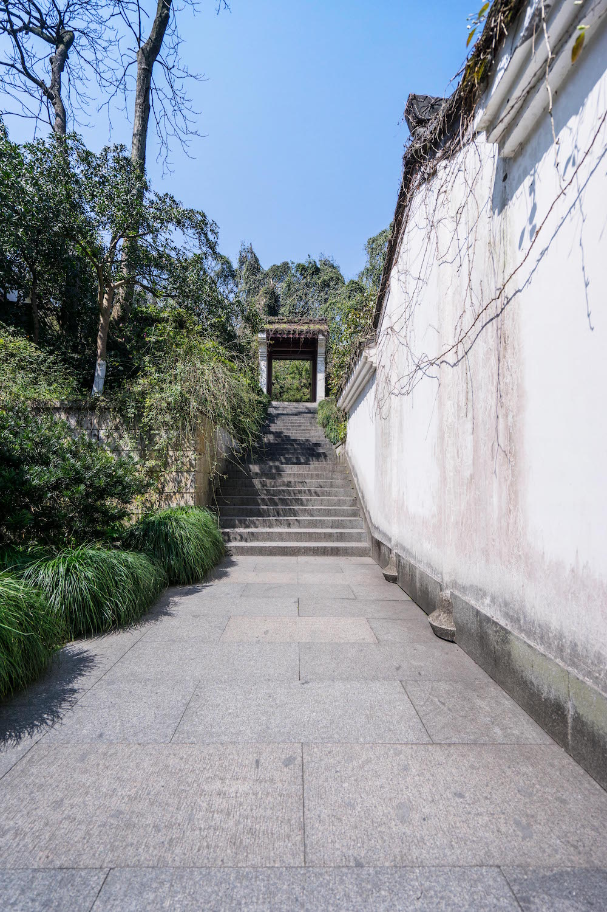
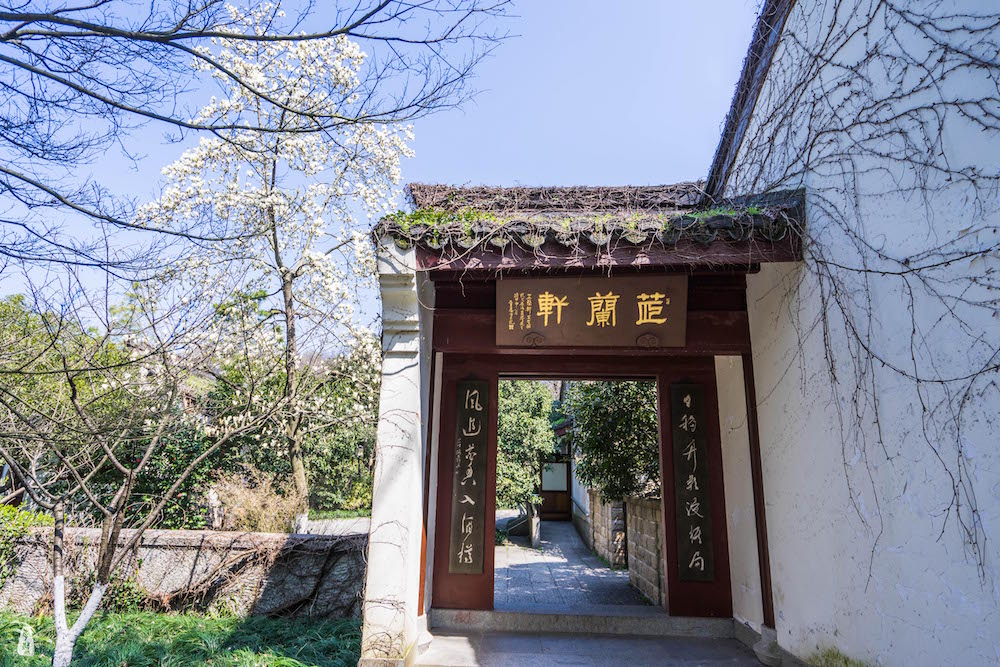
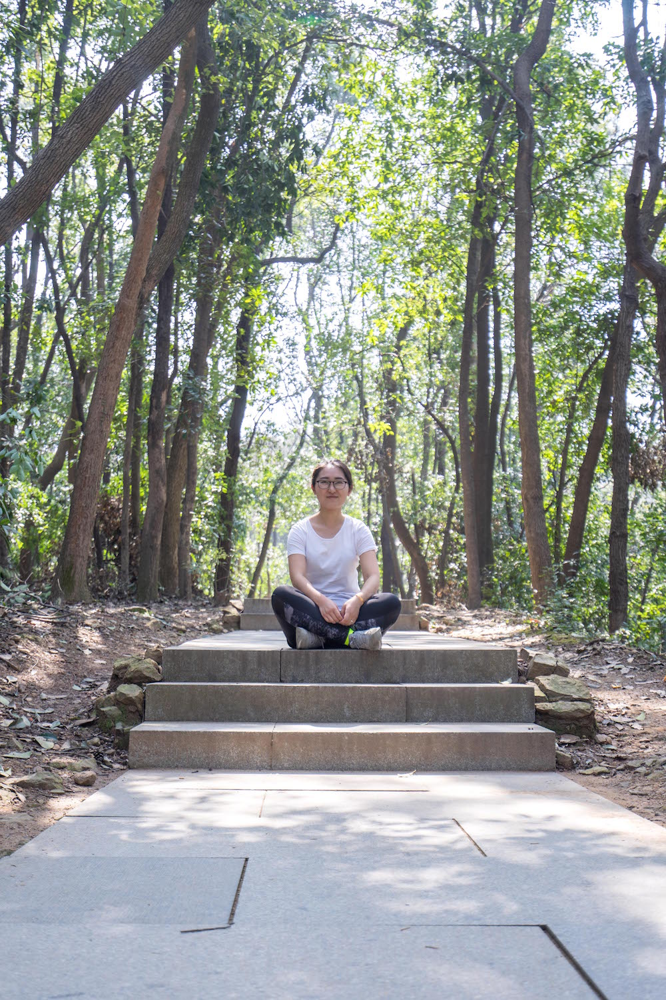
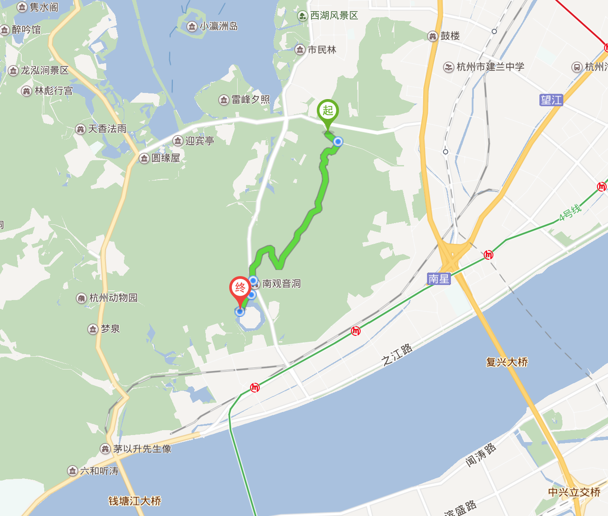

登高望远，不负好春光。网上很多攻略都说从万松书院上山，所以也没有查证就直奔万松书院。幸好买了门票准备上山的时候问了一句，工作人员告知，万松书院是封闭景区，与凤凰山有围栏隔开。上凤凰山要从停车场附近的节义亭上山。不过既然票都买了，那就进去看看吧，正好还没进去过。
万松书院，位于凤凰山北万松岭上 ，书院始建于唐贞元年间（785-804），名报恩寺。明弘治十一年（1498），浙江右参政周木改辟为万松书院。明代理学家王阳明曾在此讲学。清康熙帝为书院题写“浙水敷文”匾额，遂改称为敷文书院。现遗址尚存有“万世师表”四字的牌坊一座和依稀可见“至圣先师孔子像”的石碑等物。




大成殿中立有儒家五圣的雕像：孔子（至圣），颜子（复圣），曾子（宗圣），子思（述圣），孟子（亚圣）。虽然孟子在五圣中只排名第五，但是五圣的排序是与时间备份有关的，并不代表成就。孟子是仅次于孔子的一代儒家宗师，与孔子合称“孔孟”，因此后世我们常称儒家为“孔孟之道”。
另外，中国四大民间爱情神话传说之一，《梁祝》的故事也发生在万松书院，因此这里也是杭州常用的相亲大会举办地。据工作人员介绍，每周六都会有相亲会在此进行。
凤凰山在杭州市的南面。主峰海拔178米，北近西湖，南接江滨，形若飞凤，故名。隋唐在此肇建州治。五代吴越国将杭州设为国都，筑子城。南宋在凤凰山麓建造皇城（东起凤山门，西至凤凰山西麓，南起苕帚湾，北至万松岭，方圆4.5公里。大内有城门3座，南称丽正，北为和宁，东曰东华）。
玉皇山（237米），道教主流全真派圣地，地处西湖与钱塘江之间原名龙山，远望如巨龙横卧，雄姿俊法,风起云涌时，但见湖山空阔，江天浩瀚，境界壮伟高远,史称“万山之祖”。与凤凰山首尾相连,有“龙飞凤舞”的美称。是新西湖十景之一“玉皇飞云”所在地。
八卦田曾是南宋皇家籍田的遗址。籍田是古代中国以农为本的农耕文化的缩影，是古代帝皇通过神圣仪式活动对农业生产予以重视的场所。八卦田最早出现于明代记载，据<西湖游览志>记载：“南山胜迹中有宋藉田，在天龙寺下，中阜规圆，环以沟塍，作八卦状，俗称九宫八卦田，至今不紊”。
从书院出来往前走一点点就是节义亭，沿着台阶开始上山。这条路线总体没什么难度，空气好，阳光明媚，又带有历史文化，是休闲登山的不错选择。在山上向北可以望见西湖，向南可以望见钱塘江。所谓“内看西子，外眺钱江”。玉皇山与凤凰山首位相连，沿着山路可以直接从凤凰山到达玉皇山。路上还会经过“老玉皇宫”，是一处道观。观中提供10元一万的素面，许多登山饿了的游客会在此吃碗面，简单的咸菜面，味道还行吧。在门口往下可以直接下山到八卦田，往上可以去紫来洞。

